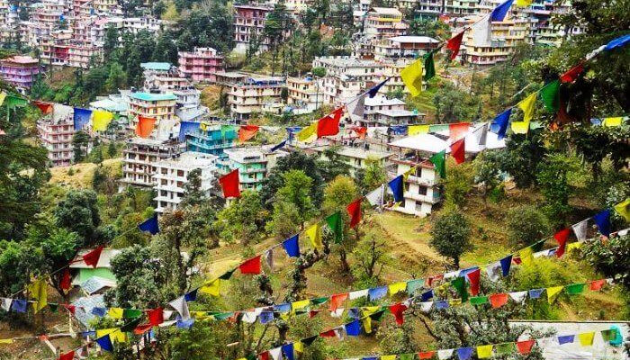

India Tourism
1. Kullu-Manali – Country’s Famous Hill Station
 One of the best places to visit in Himachal Pradesh is Kullu and Manali. If you are on a lookout for fresh air and green mountains amidst the snow-covered ranges then Kullu Manali indeed should be on the top of your list.
One of the best places to visit in Himachal Pradesh is Kullu and Manali. If you are on a lookout for fresh air and green mountains amidst the snow-covered ranges then Kullu Manali indeed should be on the top of your list.
How to reach: Chandigarh is the nearest airport, 252 Kms away. The nearest railhead is also in Chandigarh, 270 Kms away. Kullu is 570 Kms from Delhi via road.
2. Shimla – The Capital Of Himachal Pradesh
 One of the most famous hill stations of Northern India – Shimla which is the right mix of Indian glory with British sophistication.it is consecrated stunning landscape and fresh climate all through the year.
One of the most famous hill stations of Northern India – Shimla which is the right mix of Indian glory with British sophistication.it is consecrated stunning landscape and fresh climate all through the year.
How to reach: Kalka, in turn, is the nearest railhead, which is connected to Chandigarh and Delhi by regular trains. Chandigarh is at a distance of 117 kilometers, Manali at 260 kilometers and Delhi at 343 kilometers.
3. Dharamshala – The Residence Of Dalai Lama

Dharamsala definitely has to be on your list of best places to visit in Himachal Pradesh. Famous not only because of its climate but also you get to see how multicultural Indian community lives in harmony with the Indo Tibetan community.
How to reach: The nearest major railway station is at Pathankot, 85 kilometers away. Dharamshala is well-connected to Delhi The journey is almost 520 kilometers from Delhi. The drive from Delhi via Chandigarh is about 12 hours.
4. Kasauli – The Gateway To Himachal
 Kasauli is a perfect getaway from the hustle bustle of the city and is one of the most serene places to visit in Himachal in June. Almost on the outskirts of Punjab and Haryana, it is well connected by roadways.
Kasauli is a perfect getaway from the hustle bustle of the city and is one of the most serene places to visit in Himachal in June. Almost on the outskirts of Punjab and Haryana, it is well connected by roadways.
How to reach: The nearest airport is in Chandigarh, 70 km away. The nearest train station is Sonwara which is 4km away. It is 293 km from New Delhi and takes about 7 hours.
5. Bir Billing – An Adventure-Seeker’s Paradise
 If you’re an adventure seeker, Bir Billing is the mecca for adventure sports and it has to be on your list of the top places to visit in Himachal Pradesh. Bir is a small village which is located on the western side of Himachal Pradesh and is blessed with some refreshing climate.
If you’re an adventure seeker, Bir Billing is the mecca for adventure sports and it has to be on your list of the top places to visit in Himachal Pradesh. Bir is a small village which is located on the western side of Himachal Pradesh and is blessed with some refreshing climate.
How to reach: The closest airport to Bir is Dharamshala airport (in Gaggal) about 30-45 minutes south of Dharamshala. Train to Pathankot + bus/taxi onward to Bir. And then a taxi from Pathankot to Bir: 4-5 hours Bir is about 12-14 hours from Delhi by bus. Take a bus to either Baijnath or Bir Road.